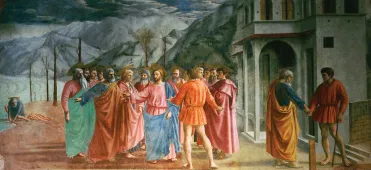

À propos de nous
Nous ouvrons pour la première fois une exposition temporaire sur la “Première Renaissance”, venez faire un bond dans le temps pour atterrir dans l’Italie des années 1420 - 1500.
Environ 2h30 des visites dans laquelle plus de 200 oeuvres et artistes seront exposés afin d’accroitre vos connaicssances.
